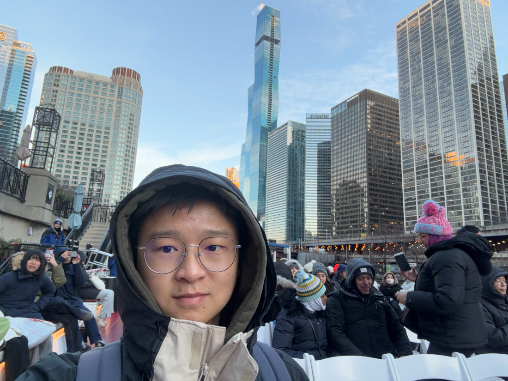

March 2025
Horseshoe Bend and the red Navajo sandstone above the Colorado River.
A running feed — where I was, and what I was doing.
Winter in Jeju — grey skies, turquoise water, and offshore wind turbines on the horizon.
The Glico running man lighting up Dotonbori at night.
In front of the White House on a clear summer afternoon.
Horseshoe Bend and the red Navajo sandstone above the Colorado River.

The modern city and skyline from a chilly river cruise.